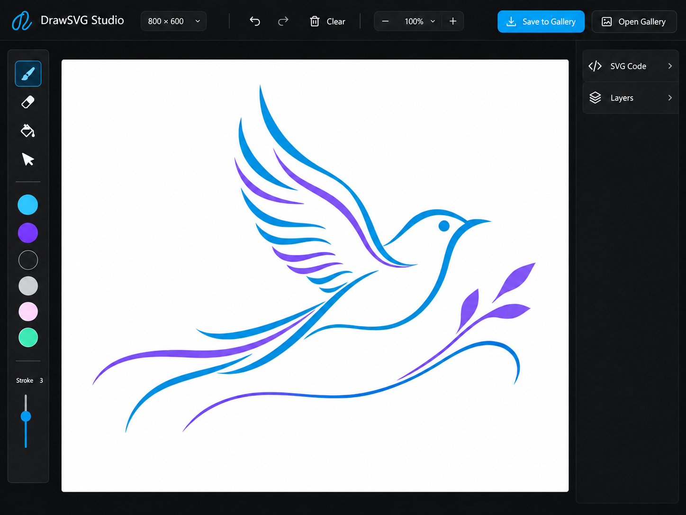
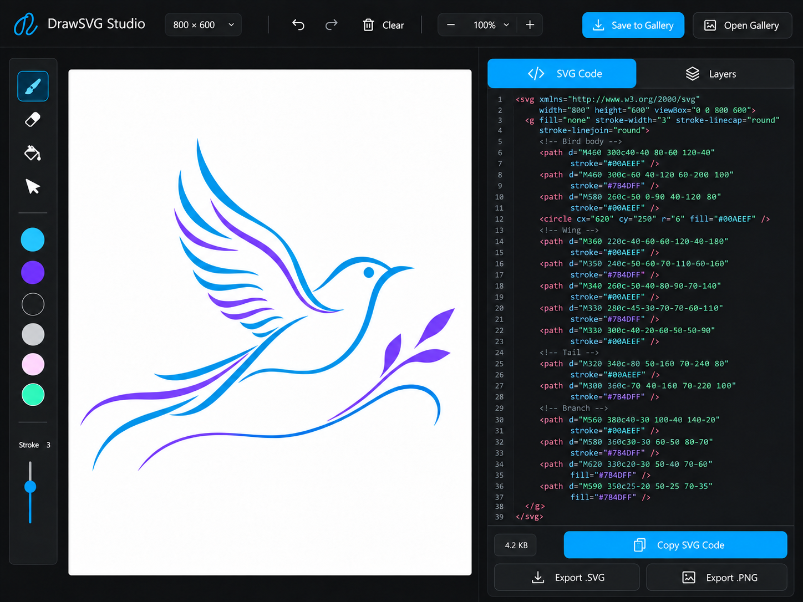
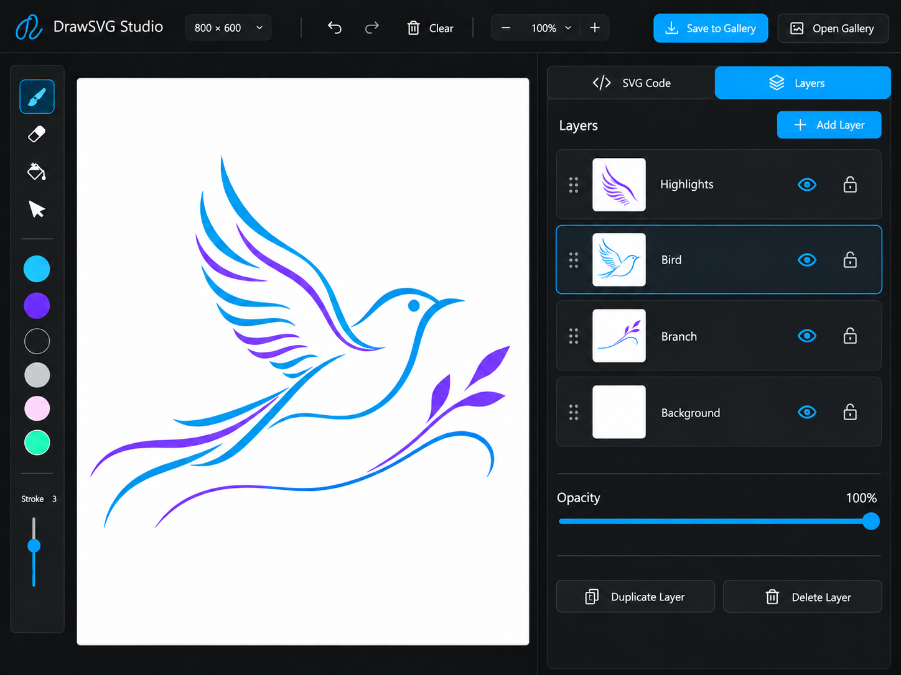
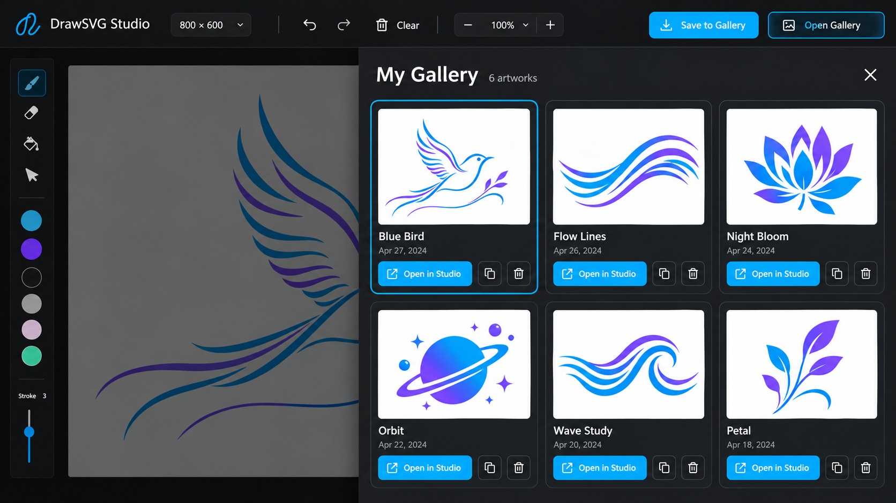

Telas do DrawSVG Studio
Conceitos visuais do Marco 2. Clique em uma imagem para abrir em tamanho integral.


Prancheta central, barra de ferramentas e navegação principal.


Código ao vivo, cópia e exportação.


Ordem, visibilidade, bloqueio e opacidade.


Miniaturas e ações sobre desenhos salvos.
As imagens são propostas visuais. O conteúdo do código e as datas exibidas nos exemplos são ilustrativos.